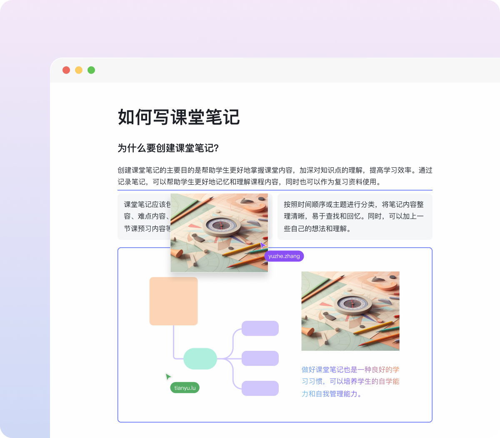
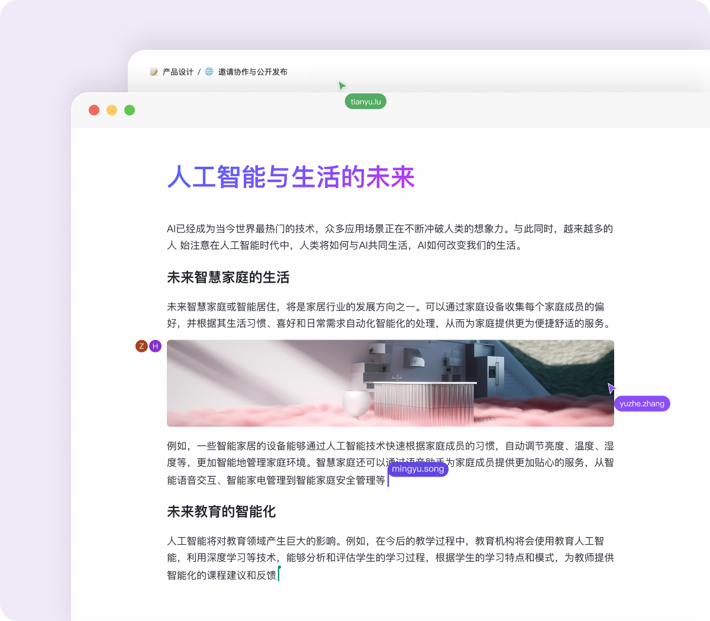

部门周会从准备到纪要，一条链在 FlowIn 里跑完
以前周会要开三个文档（飞书大纲、PPT、纪要），会后还要手动汇总。现在把 FlowIn 插进去，多人同页实时写、权限分级控范围、AI 自动转 PPT，会后纪要就在那个页面上，少了两次手动复制。
旧流程的痛点：三个文档，三次搬运
我每周二下午开部门周会，涉及的环节很简单——会前准备大纲、会中大家一起讨论、会后整理纪要和待办。以前的工具链是这样的：
- 会前：飞书文档写好本周议题和数据点 → 导出 PDF 发群里通知时间 → 单独打开 PowerPoint 做十几页的汇报稿（把文档里的重点手动复制过去）。这一步平均要花我四十分钟，其中二十分钟在"飞书 → PPT"的搬运上。
- 会中：大家各自打开自己的飞书文档或笔记本，讨论的时候有人记重点、有人写代码示例、有人改 PPT。会后要把三份不同来源的内容汇总到一份纪要里。
- 会后：纪要整理好之后，要给老板一份完整版、给其他同事一份只读版。以前是复制两份飞书文档，分别设置权限，再发两封邮件。
这套流程最烦的不是工作量，而是搬运和同步——同一个数据点要在三个地方改，改了 PPT 忘了改纪要，或者反过来，月底复盘的时候对不上号。而且多人同时编辑飞书文档偶尔会冲突，谁先保存谁赢，另一个人的改动就没了。
新流程：FlowIn 串起整条链
把 FlowIn 插进来之后，整条链的形态变成了。这款主打多人实时协同的文档工具，在官网上有详细的功能介绍和版本对比，我下面讲的流程用免费版就能跑通：
会前（FlowIn 单页面写大纲 → AI 一键转 PPT）
↓
会中（多人同页实时编辑，块级锁定不冲突）
↓
会后（页面本身就是纪要 → 权限分级 → AI 补代码示例）会前：一个页面搞定大纲 + 汇报稿
周二上午打开 FlowIn（下载安装包免费），我建一个页面，标题就是「第 N 周部门周会」。空间里的同事默认有编辑权限，我把议题拆成几个块：上周目标完成情况、本周计划、风险点、待讨论事项。大家各自打开这个页面，在对应块里填自己的内容——因为是实时协同，我这边刚写完「测试环境部署进度 90%」，负责测试的同事那边光标就跳到了同一块，补上了具体部署的版本号和回归测试结果。
填完之后，我在页面上用 /ai-ppt 唤起 AI 做 PPT，选一下"按 H2 标题自动分页"，AI 就在旁边生成了一套画布集——横向翻页的幻灯片格式，每页一屏。原来要手动复制内容调排版的二十分钟，现在变成了点一下按钮然后花五分钟微调每页的详略（有些重点内容我手动加粗，风险点那页加了个流程图）。
会中：同页实时写，块级锁定免冲突
开会的时候，所有人还是打开同一个页面。FlowIn 的块级锁定机制意味着：当我正在编辑"风险点"那块的时候，其他同事的光标进不来那块，只能在别的区域写。有人在"代码示例"块里补了一段 SQL 查询语句，有人在"待办事项"块里写了三条 action item——各自负责各自的块，不会出现"两个人同时改同一段"的冲突。
实时同步的延迟通常在一秒以内，我看到一个同事刚把"接口联调预计周五完成"改成"接口联调提前到周四"，另一个负责排期的同事光标马上就跳到了周计划那块，把周五的任务往前挪了一天。这种即时反馈是飞书文档没有的——飞书的多人编辑有延迟，经常要手动刷新一下才能看到别人改了什么。

会后：页面即纪要，权限分级一次搞定
会后不需要再整理——页面上的内容就是讨论过程的完整记录，谁在哪块写了什么、改了什么，都在里面。我做的事情只是：
- 删一下空块和重复内容（有些人写了草稿又删了，留下了空块）；
- AI 补一下代码示例——有个同事在讨论里提到了一个 Python 数据处理函数，但没写具体代码。我在对应块里用
/ai-code唤起 AI 写代码，描述一下需求："Python，用 pandas 读 CSV，按日期分组汇总用户活跃数，输出每天的活跃用户总数和去重后的设备数，加上注释"。AI 生成一个带语法高亮的代码块，我检查了一下逻辑没问题，直接插进去了； - 权限分级——给老板设置"编辑"权限（他可能会补充备注），给其他同事设置"查看"权限（只能看不能改），然后把页面链接发到群里。
以前会后要复制两份文档、设置两次权限、发两封邮件，现在变成了：一个链接 + 两次权限调整（老板升编辑，其他人降查看）。少了两次手动复制和两封格式化邮件。
实操细节：最容易断链的两个环节
这条流程跑了一个多月，踩过两个坑，值得单独说一下。
坑一：外部协作者的权限边界
有时候我们会邀请外部的合作方（比如外包的测试同学）进来一起写。FlowIn 的三级权限体系在这个场景下特别好用——给外部协作者设"评论"权限，他们可以在页面上发表意见但改不了内容。之前用飞书的时候，我没注意到飞书的权限默认是"可编辑"，外包同学不小心把上周的数据删了一条，花了半小时恢复。
设置权限的入口很简单：页面右上角有个分享按钮，点进去就能看到每个协作者的权限等级。改完即时生效——FlowIn文档里对这个权限模型有完整说明。我刚把一个外包的权限从"编辑"降到"评论"，他那边下一次尝试编辑就被系统阻止了。这个即时性在紧急场景下特别好用。

坑二：AI 做 PPT 的生成质量
AI 做 PPT 有个前提：源文档的标题层级要清晰。我第一次用的时候，页面里全是平铺的段落，没有 H2 标题，AI 生成的 PPT 每页内容都堆得很满，像把整页文档直接塞进幻灯片框里，根本没法用。
后来我养成了一个习惯：会前写大纲的时候就用 H2/H3 把章节划清楚——比如「一、上周目标」「二、本周计划」「三、风险点」，每个大章节下面用 H3 分小节。这样 AI 生成的时候，每个 H2 自动变成一页幻灯片，H3 变成这页里的子块，粒度刚好合适。生成之后再花三五分钟手动微调一下每页的详略，就可以拿去用了。
还有一点要注意：AI 做 PPT 是付费功能，每次消耗 1 AI 点数。如果团队用的是免费版，这步就跳过——直接用 FlowIn 的普通页面做汇报（全屏模式也可以演示），省掉 PPT 这一步，其他环节不变。
效果与边界
跑了六周之后，实际对比下来：
- 会前准备时间：从 40 分钟降到 15 分钟（写大纲 10 分钟 + AI 转 PPT + 微调 5 分钟）
- 会后整理时间：从 25 分钟降到 5 分钟（删空块 + 补代码 + 设权限）
- 数据同步错误：从每周 1~2 次变成了 0（之前飞书文档和 PPT 对不上的情况）
- 多人编辑冲突：0 次（块级锁定确实有效）
这套流程也有不划算的情况：
- 如果会议只有两三个人，讨论内容也不多，那 FlowIn 的实时协同优势发挥不出来，用飞书文档就够了；
- 如果汇报需要精致的动画效果（比如产品发布会级别的 PPT），还是得用 PowerPoint。FlowIn 的画布集只有基础布局，样式选择有限；
- 如果团队成员不习惯斜杠命令（
/ai-ppt、/ai-code），前期需要花个十分钟教一下，或者让他们先从 AI 菜单里点选，习惯了再用斜杠命令。
但对于每周固定要开、涉及多人讨论、会后需要整理纪要这类常规会议——FlowIn 这套链是真的能省事，而且是那种"每次省半小时，半年下来省一天"的细水长流型效率提升。